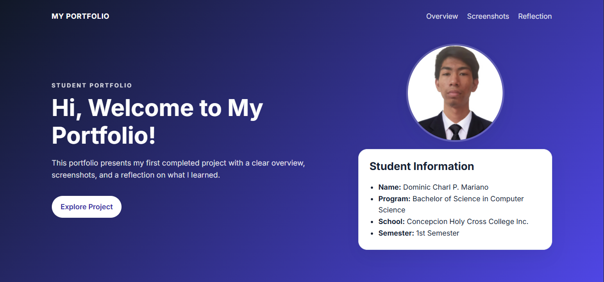
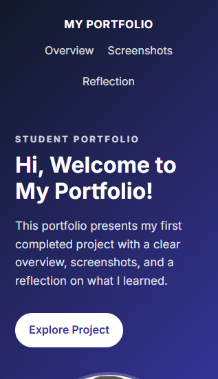

Project Overview
This portfolio showcases my first project, which is a simple web application designed to demonstrate my skills in HTML, CSS, and JavaScript. The project includes a user-friendly interface, responsive design, and interactive features that enhance the user experience.
Screenshots of the Project Output
Actual project screenshots

Windows View

Mobile View
Reflection
What I learned
Creating this project helped me understand the importance of planning, consistency, and user-centered design. I learned how to organize content, improve readability, and present ideas in a way that is easy for others to understand.
I also discovered that even a simple interface can make a meaningful difference when it is thoughtfully designed. This experience has strengthened my confidence in building future projects.